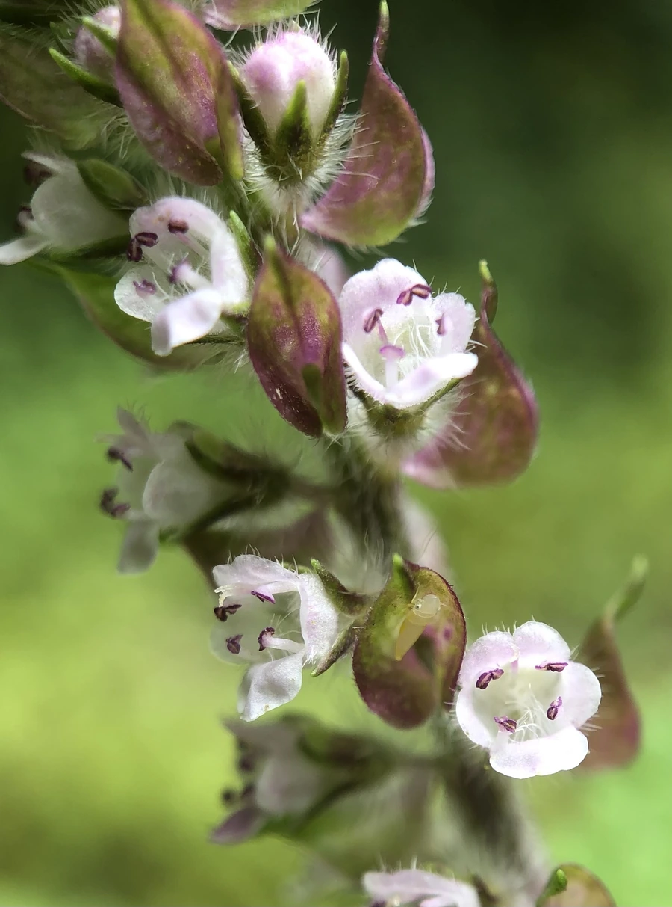

花卉与草本 · 植物界
紫苏 Perilla frutescens

唇形科一年生草本，叶片紫红或绿色、香气独特，是东亚料理中去腥增香的香草，种子和叶均可入药，原产东亚。
- 分类
- 门被子植物门纲木兰纲目唇形目科唇形科属紫苏属
- 栖息环境
- 东亚的田边、路旁与山坡，喜温暖、阳光充足
- 地理分布
- 原产东亚，中国各地栽培或野生，日本、朝鲜半岛也有分布
- 保护级别
- 暂无评估
物种志
紫苏为唇形科紫苏属一年生草本，株高 30–100 厘米，茎直立，四棱形，多分枝，全株有香气。叶片对生，卵形，边缘有锯齿，有绿色和紫红色两类。轮伞花序组成顶生或腋生的总状花序，花小，白色或淡紫色，花期 7–9 月；果实为小坚果。
紫苏原产东亚，中国各地栽培或野生，喜温暖、阳光充足和湿润的环境，适应性强，常自播繁衍。它的叶片有独特的香气，是中餐、日料和韩餐中常用的香草，可用于包肉、去腥、腌渍和泡茶；紫苏叶、梗和种子均可入药，有解表散寒、行气和胃之效。紫红品种叶色艳丽，也可作观赏植物种植。
形态与习性
- 株高30–100 厘米，茎四棱形
- 花期7–9 月，花小，白色或淡紫
- 果期9–11 月，小坚果
- 光照喜充足阳光
- 水分喜湿润，忌积水
- 土壤疏松肥沃、排水良好的壤土
- 繁殖以播种为主，能自播
- 主要用途食用香草、叶与种子入药、观叶
趣味知识
- 紫苏有绿色和紫红色两类品种，紫红品种叶色艳丽，也可观赏。
- 它的叶片有独特香气，是中餐、日料和韩餐中常用的香草。
- 紫苏叶、梗和种子均可入药，有解表散寒之效。
- 紫苏适应性强，种子落地后常能自播繁衍。